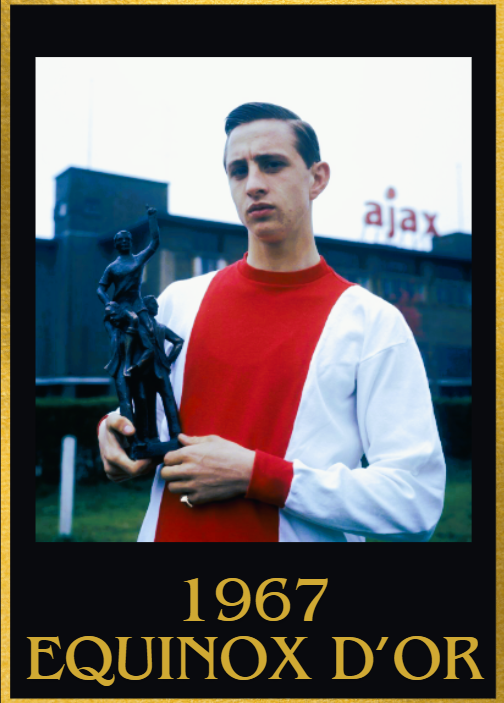

1960s Equinox d'Or Winners
1960
1st: Ferenc Puskas 🇭🇺 Real Madrid
2nd: Pele 游游 Santos
3rd:Alfredo Di Stefano 🇪🇸 Real Madrid
Achievements
- 62 goal contributions
- UEFA Champions league winner (completing a 5 peat)
- Intercontinental cup winner
- La liga top scorer
- UEFA Champions league top scorer
- Copa del rey top scorer
Key Moments
- Hat trick vs Real Zaragoza, Athletic Bilbao and Sporting Gijon
- 4 goals vs Leonesa
- Goal vs Atletico Madrid in the copa del rey final
- 4 goal contributions vs Real Oviedo
- 4 goals and 1 assist vs Elche
- 2 goals vs Penarol in the intercontinental cup final
- Hat trick of assists vs Barcelona
- 3 goal contributions vs Real Betis and Atletico Madrid
- Brace vs Barcelona in the UEFA Champions league semi final
- 2 goal contributions vs Barcelona in the UEFA Champions league semi final
- 4 goals vs Frankfurt in a UEFA Champions league Final(record)
1961
1st:Pele 游游 Santos
2nd:Ferenc Puskas 🇭🇺 Real Madrid
3rd:Omar Sivori 🇮🇹 Juventus
Achievements
- 95 goal contributions
- Domestic Double (Paulista + Brazilian league winner)
- Brazilian league top scorer
- Paulista Top scorer
Key Moments
- Hat trick of assists vs Vasco da Gama
- 3 goal contributions vs Fluminese, Portuguesa Santista, America RJ, Noroeste and Ferroviaria
- 3 goals and 1 assist vs Flamengo
- 2 goals vs Botafogo
- 2 assists vs Palmeiras
- 3 goals and 2 assists vs Noroeste, Piracibcaba and Bahia
- Hat trick of goals and a hat trick of assists vs Piracicaba
- 4 goals and 1 assist vs Sao Paulo
- 5 goals and 1 assist vs Juventus (Brazil)
- 4 goals vs Guaratingueta
- Hat trick vs Guaratingueta
- 4 goals and 2 assists vs Portuguesa RJ
- 4 goal contributions vs America RJ
1962
1st: Pele 游游 Santos
2nd: Garrincha 游游 Botafogo
3rd: Josef Masopust 🇨🇿 Dukla Praha
Achievements
- World Cup winner (injured during the knockouts)
- 87 goal contributions
- Won the South America Quadruple(Paulista + Brazilian league + Copa Libertadores+ Intercontinental cup)
- Paulista top scorer
- Intercontinental cup top scorer
Key Moments
- 3 goal contributions vs Prudentina, Wales and Paraguay
- 1 goal and 3 assists vs Sao Paulo and Corinthians
- 4 goals and 2 assists vs Jabaquara
- 4g/a vs Comercial, Noroeste and Cerro Porteno
- Hat trick vs Guarani
- 3 goals and 1 assist vs Benfica and Jabaquara
- Brace vs Benfica, Penarol, Sao Paulo and Botafogo
- 4 goals and 1 assist vs Ferroviaria
- 2 goal contributions vs Mexico in the WC
1963
1st: Pele 游游 Santos
2nd: Eusebio 🇵🇹 Benfica
3rd: Sir Jimmy Greaves 🏴 Tottenham Hotspur

Achievements
- South american Quadruple (Paulista + Brazilian league + Copa Libertadores + Intercontinental cup winner)
- Intercontinental cup top scorer
- 78 goal contributions
- Paulista top scorer
Key Moments
- 3 goal contributions vs Comerical, Noroeste, Flamengo and Portuguesa RJ
- 2 goals vs AC Milan
- Hat trick + 1 assist vs Prudentina, Olaria and Sao Paulo
- Hat trick vs Corinthians, Botafogo and France
- 4 goals vs Noroesta
- Hat trick and 2 assists vs Argentina
- 2 goals and 2 assists vs Botafogo
- Hat trick of assists vs Palmeiras
1964
1st: Pele 游游 Santos
2nd: Sir Jimmy Greaves 🏴 Tottenham Hotspur
3rd: Luis Suárez Miramontes 🇪🇸 Internazionale Milan
Achievements
- Brazilian League top scorer
- Paulista top scorer
- Domestic double (Brazilian league and Paulista winner)
- 80 goal contributions
Key Moments
- Hat trick vs Flamengo and gremio
- 2 goals and 2 assists vs Sao Bento
- 4 goals and 2 assists vs Corinthians and Prudentina
- 8 goals and 1 assists Botafogo
- Hat trick+ 1 assists vs Piracicaba
- 2 assists vs Sao Paulo
- 1 goal and a hat trick of assists vs England
- 3 goal contributions vs Gremio
1965
1st: Pele 游游 Santos
2nd: Eusebio 🇵🇹 Benfica
3rd: Giacinto Facchetti 🇮🇹 Internazionale Milan
Achievements
- 105 goal contributions
- Brazilian League top scorer
- Paulista top scorer
- Domestic double (Brazilian league and Paulista winner)
Key Moments
3 goals and 1 assists vs Uni de Chile, Belgium and Botafogo
3 goal contributions vs Penarol, Soviet Union, Corinthians(twixe), Juventus (brazil)
4 goals vs Corinthians, Prudentina and Botafogo
5 goals and 1 assist vs Noroesta
Hat trick vs Comerical-RP, Prudentina, Portguesa, America-SP and Juventus(brazil)
4 goals and 2 assists vs Guarani
2 assists vs Palmeiras
1966
1st: Eusebio 🇵🇹 Benfica
2nd:Sir Bobby Charlton 🏴 Manchester United
3rd:Franz Beckenbauer 🇩🇪 Bayern München
Achievements
- 46 goals (and 1 assist in the world cup)
- World cup golden boot
- UEFA Champions league top scorer
- 3rd place finish in the world cup
Key Moments
- Assist vs Hungary(in the World Cup)
- Brace vs Brazil (in the World Cup)
- 4 goals vs North Korea (in the world cup)
- Goal vs England in the World Cup semi final
- Goal vs Soviet Union in the World Cup 3rd place match
- Brace vs Norway, Braga, Porto, Fabril Varreiero, Sanjoanense, Porto, Atletico CP, Sporting CP and Leixoes
- Hat trick vs Beira-Mar and Portimonense
1967
1st: Johan Cruyff 游游 Ajax
2nd:Flórián Albert 🇭🇺 Ferencváros
3rd: Bobby Charlton 🏴 Manchester united

Achievements
- 71 goal contributions (as an attacking Midfielder)
- Dutch league winner
- Dutch cup winner
Key Moments
- 2 goals and a hat trick of assists vs Twente and AWS
- 4 goals and 1 assist vs Maastricht
- 1 goal and 3 assists vs Go Ahead eagles
- 2 goal contributions vs Fortuna Sittard and ADO Den Haag
- Hat trick of assists vs DOS
- 3 goal contributions vs Volendam, Sittardia and Xerxes
- 4 goal contributions vs Maastricht, DWS and NEC Nijmegen
1968
1st: George Best 🏴 Manchester United
2nd:Sir Bobby Charlton 🏴 Manchester united
3rd:Pele 游游 Santos

Achievements
- 42 goal contributions
- UEFA Champions league winner
- English first division top scorer
Key Moments
- Goal vs Benfica in the UEFA champions league final
- 2 assists vs Real Madrid in the UEFA Champions league semi final
- Game winning goal vs Real Madrid in the UEFA champions league semi final
- 4 goal contributions vs Sheffield Wednesday
- 2 goal contributions vs Fulham and Everton
- Brace vs QPR and Fulham
- 2 goals and 1 assist vs Newcastle United
- Hat trick vs Newcastle United
- 2 assists vs Waterford United
1969
1st: Gianni Rivera 🇮🇹 AC Milan
2nd: Pele 游游 Santos
3rd: Johan Cruyff 游游 Ajax
Achievements
- Intercontinental Cup winner
- UEFA champions league winner
- 20 goal contributions as an attacking Midfielder
Key Moments
- 2 assists vs Benfica in the UEFA Champions league final
- 2 assists vs Bologna
- Goal vs Estudiantes in the Intercontinental cup final
- 2 goal contributions vs Avenir Beggen in the UEFA Champions league
- 4 goals vs Brescia
- An assist vs Roma and Cagliari
- 3 goal contributions vs Como